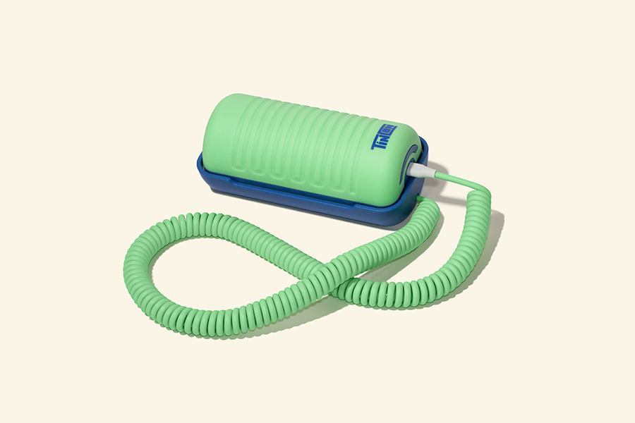
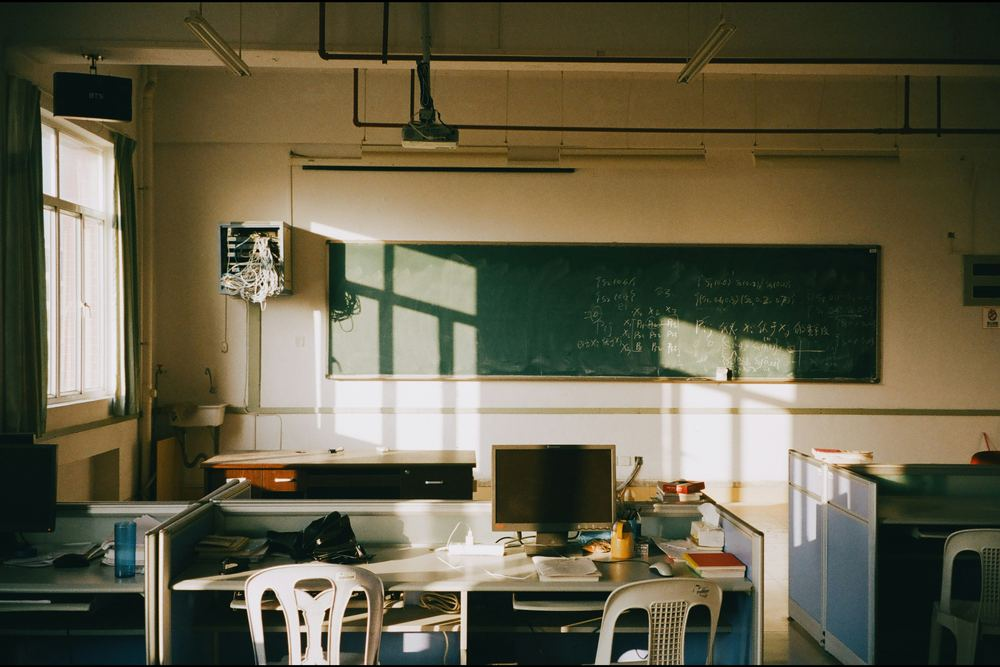
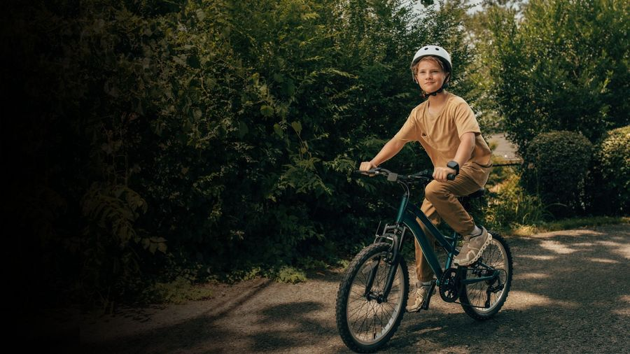

The watch instead of the phone
What five countries teach parents about kids and connection.
A guide for parents
Find the right first device for your child, from a kids' landline to a smartwatch, in about two minutes. Then see who can reach them, where, and on whose terms.
Where they go, and what you're comfortable with: tracking, messaging, apps, camera.
2Devices ranked for your family, plus a tech radar of every feature, placed by your comfort levels.
3What critics worry about, what your country's rules say, and the latest news.
Choosing a device isn't only about the gadget. It's about the circles around your child. Tap a ring to explore each one.
Pick your country, drag the places your kid goes, and set what you're comfortable with. Your plan updates the map, the gallery, the news, and the last page of the essay. It stays in this browser only.
Every device and feature, placed by the comfort levels in your plan. Move a slider and watch things shift between rings. Select any dot to learn what it is and why people disagree about it.
Each topic explains what the technology does, why parents choose it, and what critics worry about, with sources for both sides.
Ranked for your family plan. Filter by where your kid will use it, or scroll down for a quick guide by place and age. Badges show how each device fits the comfort levels you set. Last checked September 23, 2026.
Where each country stands on phones in schools, social media age limits, and children's data. Last checked September 23, 2026.
The same watch means something different depending on the rules and culture around it.
About one in three kids wears a smartwatch, mostly from one brand. Its watches only message each other, and kids add friends by bumping wrists. Likes and rankings followed, then peer pressure and a black market for likes.
A closed network can turn into a kids' social network.
Many brands, each sold as a walled garden: no internet, no social media, parent-approved contacts only. Kids still ask for phones, because that's where their friends are.
A watch buys time. It doesn't end the phone conversation.
Social media is banned for kids under 16 since December 2025. Watch makers now market themselves as the approved alternative. Months in, many parents say kids still get onto the apps.
Laws help, but they only work if platforms follow them.
In 2017, regulators banned kids' watches with a hidden listen-in feature after parents used them to eavesdrop on teachers.
Watching your kid too closely can become its own problem.
Secondary schools now ban smartwatches along with phones, including at recess and after-school activities.
Some schools no longer see watches as the safe middle ground.
A smaller screen doesn't stop social media. It just shrinks it.
Curated stories last checked September 23, 2026.
Checking whether live search is available...
The same story, told start to finish. Turn the pages with the buttons, your arrow keys, or a swipe.
What five countries teach parents about kids and connection.
Parents everywhere are asking how to reach their child without handing over the whole internet. The kids' smartwatch looks like the answer. It sits on the wrist, it's hard to lose, and it's limited by design.
But the same device means very different things depending on where it's worn.
Parents in China buy kids' watches for safety: live location and calls. The leading brand won for another reason. Its watches only message each other, so kids without one get left out.
Over time the watch added levels, badges, and public like counts. Peer pressure and a black market for likes followed. Today about one in three Chinese kids wears one.
American watch makers sell the opposite promise: calls, texts, and GPS, with no internet and only parent-approved contacts.
What the US lacks is a kids-only network, and that may be why watches haven't replaced phones. Kids ask for phones because that's where their friends are. The watch buys time without ending the conversation.
One US company went further back. Tin Can is a Wi-Fi landline for kids: voice only, approved callers only, free calls between Tin Cans.
It spreads the way China's watches did, one friend group at a time. The difference is that a phone on the kitchen wall has no room for likes or rankings. It just rings.
Australia skipped the market debate. Since December 2025, kids under 16 can't hold accounts on the major social apps. The push traces back to a parent reading Jonathan Haidt's The Anxious Generation.
Local watch makers now sell themselves as the approved alternative. Months in, many parents say kids still find their way onto the apps. A watch can't enforce a ban that platforms don't.
Europe asked a different question: what if the danger is the parent? In 2017 Germany banned kids' watches with a hidden listen-in feature, after parents used them to eavesdrop on teachers in class.
Weeks earlier, Norway's consumer council had warned that some kids' watches could be hacked by strangers. Safety tools can become surveillance tools.
The newest twist: Singapore's secondary schools now ban smartwatches along with phones, including at recess and after-school activities.
Some schools no longer see the watch as a safe middle ground.
The device matters less than three questions. Who controls the network: a company, or you? Who is being watched, and by whom? And who enforces the limits: families, platforms, or the law?
A smaller screen doesn't stop social media. It just shrinks it.
Every device only reaches as far as its signal. Start at home and move outward.



Rough guides based on how reviewers group these products. Your kid's maturity matters more than the number.
Voice only. Learning to call, answer, and make plans without borrowing your phone.
Calls and texts with approved contacts, plus location. No internet, no apps.
An Apple Watch with Family Setup opens group chats. It's a bridge toward a phone, not a replacement.
If and when you decide. Many families wait until at least the end of 8th grade.
One for each ring.
Unsplash photos are free to use under the Unsplash License. Press page images are published by the company for media use. Images marked permission pending need the brand's OK before this page is shared.